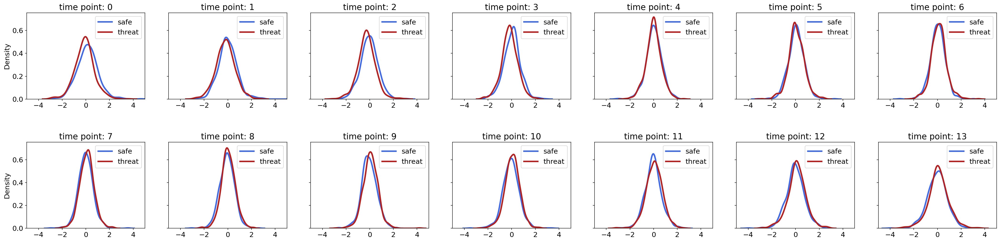
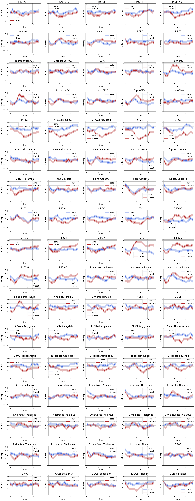

June 4, 2022: creating simulated data
June 4, 2022: creating simulated data¶
import os
import sys
from os.path import join as pjoin
import numpy as np
import pandas as pd
import scipy as sp
import torch
import torch.nn as nn
print(torch.cuda.is_available())
import pickle, time, random
# import neural_structured_learning as nsl
from tqdm import tqdm
import json
from itertools import combinations, product
from operator import add
import copy
from glob import glob
# explanation tools
import captum
# plotting
import matplotlib as mpl
import matplotlib.colors as mcolors
import matplotlib.pyplot as plt
plt.rcParamsDefault['font.family'] = "sans-serif"
plt.rcParamsDefault['font.sans-serif'] = "Arial"
plt.rcParams['font.size'] = 14
plt.rcParams["errorbar.capsize"] = 0.5
# nilearn
from nilearn import image
from nilearn import masking
from nilearn import plotting
# main dirs
proj_dir = pjoin(os.environ['HOME'], 'explainable-ai')
results_dir = f"{proj_dir}/results"
month_dir = f"{proj_dir}/nb/jun22"
# folders
sys.path.insert(0, proj_dir)
import helpers.dataset_utils as dataset_utils
import helpers.base_model as base_model
import helpers.model_definitions as model_definitions
# cuda device
device = "cuda:1" if torch.cuda.is_available() else "cpu"
print(f"Using {device} device")
True
2022-06-04 21:29:50.931390: I tensorflow/stream_executor/platform/default/dso_loader.cc:53] Successfully opened dynamic library libcudart.so.11.0
Using cuda:1 device
def get_data(data_df, subj_idx_list):
normalize = lambda z: (z - np.mean(z)) / np.std(z)
X, y = [], []
for idx_row in tqdm(subj_idx_list):
subj, ts, targets = data_df.iloc[idx_row]
for label in args.LABELS:
contig_regions = dataset_utils.contiguous_regions(targets == label)
for region in contig_regions:
X.append(ts[region[0]: region[1], :])
y.append(targets[region[0]: region[1]])
X = np.stack(X, axis=0)
y = np.stack(y, axis=0)
for idx_roi in np.arange(X.shape[-1]):
X[:, :, idx_roi] = normalize(np.squeeze(X[:, :, idx_roi]))
return X, y #torch.FloatTensor(X).to(device=device), torch.LongTensor(y).to(device=device)
'''
dataframe
'''
max_data_path = f"{proj_dir}/data/max/data_df.pkl"
with open(max_data_path, 'rb') as f:
max_data_df = pickle.load(f)
'''
(hyper)-parameters
'''
class ARGS(): pass
args = ARGS()
args.SEED = 74
args.LABELS = [0, 1]
args.names = ['safe', 'threat']
args.MASK = -100
# data
args.num_subjects = len(max_data_df)
args.num_train = round(0.4 * args.num_subjects)
args.num_valid = round(0.3 * args.num_subjects)
args.num_test = args.num_subjects - args.num_train - args.num_valid
'''
generate dataset for the model
'''
subject_idx_list = np.arange(args.num_subjects)
# random.Random(args.SEED).shuffle(subject_idx_list)
train_idx_list = subject_idx_list[:args.num_train]
valid_idx_list = subject_idx_list[args.num_train : args.num_train + args.num_valid]
test_idx_list = subject_idx_list[args.num_train + args.num_valid:]
(X_train, y_train) = get_data(max_data_df, train_idx_list)
(X_valid, y_valid) = get_data(max_data_df, valid_idx_list)
(X_test, y_test) = get_data(max_data_df, test_idx_list)
100%|██████████| 44/44 [00:00<00:00, 2277.32it/s]
100%|██████████| 33/33 [00:00<00:00, 2459.39it/s]
100%|██████████| 32/32 [00:00<00:00, 7773.98it/s]
def plot_roi_time_series(X, y, savefig=False, fig_file=None):
X_conds = {}
for label in args.LABELS:
idx = y[:, 0] == label
X_conds[f"{label}_m"] = np.mean(X[idx, :, :], axis=0)
X_conds[f"{label}_s"] = 1.96 * np.std(X[idx, :], axis=0) / np.sqrt(idx.shape[0])
roi_name_file = (
f"{os.environ['HOME']}/parcellations/MAX_85_ROI_masks/ROI_names.txt"
)
roi_names = pd.read_csv(roi_name_file, names=['roi_name']).values.squeeze()
time = np.arange(X.shape[1])
names = ['safe', 'threat']
colors = {0:'royalblue', 1:'firebrick'}
nrows, ncols = 17, 5
fig, axs = plt.subplots(
nrows=nrows,
ncols=ncols,
figsize=(5*ncols, 4*nrows),
sharex=False,
sharey=True,
dpi=150
)
plt.subplots_adjust(
left=None, bottom=None,
right=None, top=None,
wspace=None, hspace=0.5
)
for idx_roi, roi_name in enumerate(roi_names):
ax = axs[idx_roi//ncols, np.mod(idx_roi,ncols)]
ax.set_title(f"{roi_name}")
for label in args.LABELS:
ts_mean = X_conds[f"{label}_m"][:, idx_roi]
ts_std = X_conds[f"{label}_s"][:, idx_roi]
ax.plot(ts_mean, color=colors[label], label=names[label])
ax.fill_between(
time,
(ts_mean - ts_std),
(ts_mean + ts_std),
alpha=0.3, color=colors[label],
)
ax.set_xlabel(f"time")
ax.set_ylabel(f"roi resp.")
ax.grid(True)
ax.legend()
if savefig:
fig.savefig(
fig_file,
dpi=150,
format='png',
bbox_inches='tight',
transparent=False
)
def plot_samples(X, y, savefig=False, fig_file=None):
X_conds = {}
for label in args.LABELS:
idx = y[:, 0] == label
X_conds[label] = X[idx]
roi_name_file = (
f"{os.environ['HOME']}/parcellations/MAX_85_ROI_masks/ROI_names.txt"
)
roi_names = pd.read_csv(roi_name_file, names=['roi_name']).values.squeeze()
time = np.arange(X.shape[1])
names = ['safe', 'threat']
colors = {0:'royalblue', 1:'firebrick'}
nrows, ncols = 17, 5
fig, axs = plt.subplots(
nrows=nrows,
ncols=ncols,
figsize=(5*ncols, 4*nrows),
sharex=False,
sharey=True,
dpi=150
)
plt.subplots_adjust(
left=None, bottom=None,
right=None, top=None,
wspace=None, hspace=0.5
)
for idx_roi, roi_name in enumerate(roi_names):
ax = axs[idx_roi//ncols, np.mod(idx_roi,ncols)]
ax.set_title(f"{roi_name}")
for label in args.LABELS:
ts_mean = X_conds[label][:10, :, idx_roi].T
ax.plot(ts_mean, color=colors[label], alpha=0.3)
ax.set_xlabel(f"time")
ax.set_ylabel(f"roi resp.")
ax.grid(True)
# ax.legend()
if savefig:
fig.savefig(
fig_file,
dpi=150,
format='png',
bbox_inches='tight',
transparent=False
)
'''
samples of the actual data
'''
X, y = X_train, y_train
plot_samples(X, y)

'''
ditribution of error around mean for each time point
'''
import seaborn as sns
X, y = X_train, y_train
idx_roi = 45
X_conds = {}
for label in args.LABELS:
idx = y[:, 0] == label
X_conds[label] = X[idx, :, idx_roi].squeeze() - np.mean(X[idx, :, idx_roi], axis=1)[:, None]
time = np.arange(X.shape[1])
names = ['safe', 'threat']
colors = {0:'royalblue', 1:'firebrick'}
nrows, ncols = 2, 7
fig, axs = plt.subplots(
nrows=nrows,
ncols=ncols,
figsize=(5*ncols, 4*nrows),
sharex=False,
sharey=True,
dpi=150
)
plt.subplots_adjust(
left=None, bottom=None,
right=None, top=None,
wspace=None, hspace=0.5
)
for idx_tp, tp in enumerate(time):
ax = axs[idx_tp//ncols, np.mod(idx_tp,ncols)]
ax.set_title(f"time point: {tp}")
for label in args.LABELS:
sns.kdeplot(
x=X_conds[label][:, idx_tp],
ax=ax,
color=colors[label],
label=names[label],
linewidth=3
)
ax.set_xlim(-5.0, 5.0)
ax.legend()

'''
white-noise
-----------
1. std's for each roi and each tp
2. simulated data with i.i.d. normal noise around mean time series
'''
X_, y_ = [], []
for label in args.LABELS:
idx = y[:, 0] == label
X_ += [np.random.normal(
loc=np.mean(X[idx], axis=0),
scale=np.std(X[idx], axis=0),
size=X[idx].shape
)]
y_ += [np.ones(shape=(X[idx].shape[:-1])) * label]
X_ = np.concatenate(X_, axis=0)
y_ = np.concatenate(y_, axis=0)
perm = np.random.permutation(y_.shape[0])
X_ = X_[perm]
y_ = y_[perm]
plot_roi_time_series(X_, y_)

'''
wide-sense stationary (wss) noise
---------------------------
'''
for label in args.LABELS:
idx = y[:, 0] == label
X_ = np.mean(X[idx], axis=0)
idx_roi = 23
from pmdarima.arima.utils import ndiffs
ndiffs(X_[:, idx_roi], test='adf')
from statsmodels.graphics.tsaplots import plot_acf, plot_pacf
nrows, ncols = 1, 2
fig, axs = plt.subplots(
nrows=nrows,
ncols=ncols,
figsize=(5*ncols, 4*nrows),
sharex=False,
sharey=True,
dpi=150
)
ax = axs[0]
plot_acf(X_[:, idx_roi], ax=ax)
ax.set_ylim(0, 1.0)
ax = axs[1]
plot_pacf(X_[:, idx_roi], ax=ax)
/home/govindas/venvs/expln-ai3.9/lib/python3.9/site-packages/statsmodels/graphics/tsaplots.py:348: FutureWarning: The default method 'yw' can produce PACF values outside of the [-1,1] interval. After 0.13, the default will change tounadjusted Yule-Walker ('ywm'). You can use this method now by setting method='ywm'.
warnings.warn(
---------------------------------------------------------------------------
ValueError Traceback (most recent call last)
/home/govindas/explainable-ai/nb/jun22/01-simulated_data.ipynb Cell 12' in <cell line: 20>()
<a href='vscode-notebook-cell://ssh-remote%2B129.2.150.11/home/govindas/explainable-ai/nb/jun22/01-simulated_data.ipynb#ch0000014vscode-remote?line=16'>17</a> ax.set_ylim(0, 1.0)
<a href='vscode-notebook-cell://ssh-remote%2B129.2.150.11/home/govindas/explainable-ai/nb/jun22/01-simulated_data.ipynb#ch0000014vscode-remote?line=18'>19</a> ax = axs[1]
---> <a href='vscode-notebook-cell://ssh-remote%2B129.2.150.11/home/govindas/explainable-ai/nb/jun22/01-simulated_data.ipynb#ch0000014vscode-remote?line=19'>20</a> plot_pacf(X_[:, idx_roi], ax=ax)
File ~/venvs/expln-ai3.9/lib/python3.9/site-packages/statsmodels/graphics/tsaplots.py:363, in plot_pacf(x, ax, lags, alpha, method, use_vlines, title, zero, vlines_kwargs, **kwargs)
<a href='file:///home/govindas/venvs/expln-ai3.9/lib/python3.9/site-packages/statsmodels/graphics/tsaplots.py?line=360'>361</a> acf_x = pacf(x, nlags=nlags, alpha=alpha, method=method)
<a href='file:///home/govindas/venvs/expln-ai3.9/lib/python3.9/site-packages/statsmodels/graphics/tsaplots.py?line=361'>362</a> else:
--> <a href='file:///home/govindas/venvs/expln-ai3.9/lib/python3.9/site-packages/statsmodels/graphics/tsaplots.py?line=362'>363</a> acf_x, confint = pacf(x, nlags=nlags, alpha=alpha, method=method)
<a href='file:///home/govindas/venvs/expln-ai3.9/lib/python3.9/site-packages/statsmodels/graphics/tsaplots.py?line=364'>365</a> _plot_corr(
<a href='file:///home/govindas/venvs/expln-ai3.9/lib/python3.9/site-packages/statsmodels/graphics/tsaplots.py?line=365'>366</a> ax,
<a href='file:///home/govindas/venvs/expln-ai3.9/lib/python3.9/site-packages/statsmodels/graphics/tsaplots.py?line=366'>367</a> title,
(...)
<a href='file:///home/govindas/venvs/expln-ai3.9/lib/python3.9/site-packages/statsmodels/graphics/tsaplots.py?line=373'>374</a> **kwargs,
<a href='file:///home/govindas/venvs/expln-ai3.9/lib/python3.9/site-packages/statsmodels/graphics/tsaplots.py?line=374'>375</a> )
<a href='file:///home/govindas/venvs/expln-ai3.9/lib/python3.9/site-packages/statsmodels/graphics/tsaplots.py?line=376'>377</a> return fig
File ~/venvs/expln-ai3.9/lib/python3.9/site-packages/statsmodels/tsa/stattools.py:996, in pacf(x, nlags, method, alpha)
<a href='file:///home/govindas/venvs/expln-ai3.9/lib/python3.9/site-packages/statsmodels/tsa/stattools.py?line=993'>994</a> nlags = min(int(10 * np.log10(nobs)), nobs // 2 - 1)
<a href='file:///home/govindas/venvs/expln-ai3.9/lib/python3.9/site-packages/statsmodels/tsa/stattools.py?line=994'>995</a> if nlags >= x.shape[0] // 2:
--> <a href='file:///home/govindas/venvs/expln-ai3.9/lib/python3.9/site-packages/statsmodels/tsa/stattools.py?line=995'>996</a> raise ValueError(
<a href='file:///home/govindas/venvs/expln-ai3.9/lib/python3.9/site-packages/statsmodels/tsa/stattools.py?line=996'>997</a> "Can only compute partial correlations for lags up to 50% of the "
<a href='file:///home/govindas/venvs/expln-ai3.9/lib/python3.9/site-packages/statsmodels/tsa/stattools.py?line=997'>998</a> f"sample size. The requested nlags {nlags} must be < "
<a href='file:///home/govindas/venvs/expln-ai3.9/lib/python3.9/site-packages/statsmodels/tsa/stattools.py?line=998'>999</a> f"{x.shape[0] // 2}."
<a href='file:///home/govindas/venvs/expln-ai3.9/lib/python3.9/site-packages/statsmodels/tsa/stattools.py?line=999'>1000</a> )
<a href='file:///home/govindas/venvs/expln-ai3.9/lib/python3.9/site-packages/statsmodels/tsa/stattools.py?line=1001'>1002</a> if method in ("ols", "ols-inefficient", "ols-adjusted"):
<a href='file:///home/govindas/venvs/expln-ai3.9/lib/python3.9/site-packages/statsmodels/tsa/stattools.py?line=1002'>1003</a> efficient = "inefficient" not in method
ValueError: Can only compute partial correlations for lags up to 50% of the sample size. The requested nlags 12 must be < 7.
from statsmodels.tsa.arima.model import ARIMA
idx_roi = 60
model = ARIMA(X_[:, idx_roi], order=(1, 1, 0))
model_fit = model.fit()
print(model_fit.summary())
SARIMAX Results
==============================================================================
Dep. Variable: y No. Observations: 14
Model: ARIMA(1, 1, 0) Log Likelihood 20.442
Date: Sat, 04 Jun 2022 AIC -36.883
Time: 22:17:27 BIC -35.753
Sample: 0 HQIC -37.116
- 14
Covariance Type: opg
==============================================================================
coef std err z P>|z| [0.025 0.975]
------------------------------------------------------------------------------
ar.L1 0.3316 0.689 0.481 0.630 -1.019 1.682
sigma2 0.0025 0.001 2.602 0.009 0.001 0.004
===================================================================================
Ljung-Box (L1) (Q): 0.04 Jarque-Bera (JB): 6.51
Prob(Q): 0.85 Prob(JB): 0.04
Heteroskedasticity (H): 0.44 Skew: -1.52
Prob(H) (two-sided): 0.45 Kurtosis: 4.68
===================================================================================
Warnings:
[1] Covariance matrix calculated using the outer product of gradients (complex-step).
model_fit.params
array([0.66301316, 0.00307167])